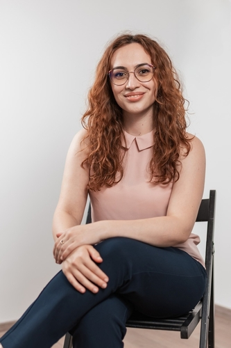

Află mai multe despre valori, mod de lucru și parcursul meu profesional.
Psihoterapia este spațiul în care complexitatea ta ca om este primită cu respect și fără judecată. Cred că nu suntem liniari și nici perfecți, iar dificultățile prin care trecem au nuanțe și rădăcini care merită înțelese. Viața ne aduce deseori în puncte de cotitură în care nevoia de sprijin devine un pas firesc spre echilibru.
Schimbarea începe atunci când alegem să ne privim cu sinceritate, înlocuind treptat autocritica cu o atitudine de curiozitate față de propriul univers interior. Această deschidere face loc unor noi moduri de a experimenta viața, în acord cu cine ești astăzi și cu valorile care îți oferă direcție.
Știu că explorarea interioară nu este deseori confortabilă, însă ea aduce o transformare ce rămâne în timp.
Pornesc de la premisa că resursele și răspunsurile se află deja în interiorul tău. Rolul meu este să îți ofer ghidajul profesionist necesar pentru a le descoperi, într-un ritm care să îți respecte nevoile. Sunt alături de tine cu prezență și empatie, sprijinindu-te să îți recapeți autonomia și să pășești cu mai multă încredere pe propriul drum.

Paradoxul curios este că, atunci când mă accept așa cum sunt, pot să mă schimb.Carl Rogers
În psihoterapia integrativă folosesc instrumente din mai multe abordări terapeutice, cunoscute deja pentru eficiența lor (precum abordarea cognitiv-comportamentală, umanist-experiențială sau psihodinamică). Rezultatul este o intervenție personalizată, adaptată nevoilor, dificultăților și contextului tău.
Ne uităm împreună la modul în care gândurile îți modelează percepția asupra ta și a celor din jur, dar și la emoțiile dificile, cărora le facem loc să fie înțelese și primite cu acceptare.
Totodată, dăm sens mecanismelor care s-au dezvoltat în perioade cheie de creștere pentru a te proteja, dar care în timp au devenit bariere ce te blochează din a duce o viață autentică și satisfăcătoare.
Împreună, transformăm treptat conștientizările din cabinet în alegeri care să îți onoreze nevoile reale și să îți redea libertatea de a fi tu însuți/însăți.
Împletind acceptarea și validarea emoțiilor cu atitudinea focusată pe a înțelege, mă asigur de crearea unui spațiu de siguranță, în care gândurile și emoțiile tale pot prinde glas.
Fiecare om este expert în propria viață. Te sprijin să-ți valorizezi resursele și să-ți dezvolți încrederea în capacitatea ta de a te descurca și de a lua decizii cu sens pentru tine.
Îmbin prezența caldă cu un cadru stabil și metode validate științific. Lucrăm structurat, urmărind obiectivele stabilite împreună, pentru a ne asigura că procesul tău are o direcție clară.
Eu vin cu sprijin, informații și ghidaj, iar tu cu motivația și implicarea ta activă, într-un cadru bazat pe transparență și respect reciproc.
Atestat de liberă practică eliberat de Colegiul Psihologilor din România. Cod personal: 27604
Institutul Român de Psihoterapie Integrativă (IRPI)
Facultatea de Psihologie și Științele Educației, Universitatea din București
Facultatea de Psihologie și Științele Educației, Universitatea din București
Dacă simți că rezonezi cu această abordare, primul pas este o întâlnire de cunoaștere.
Contactează-mă